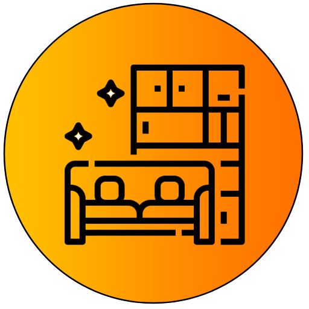

<ion-content [fullscreen]="true">
  <div class="cosas-lindas">
    <ion-card class="card-fotos" *ngIf="!spinnerMostrandose">
      <ion-list class="lista-fotos">
        <ion-item class="item-foto" *ngFor="let cosaLinda of this.fotos; let i = index"> 
          <div class="foto">
            <h1 class="autor">Foto subida por: {{cosaLinda.autor}}</h1>
            
            <ion-row class="descripcion">
              <ion-button 
              class="btn-votar" 
              *ngIf="!cosaLinda.reaccionUsuarios.includes(this.userService.ObtenerNombreUsuario())" 
              (click)="this.fireStoreService.VotarFoto('cosas-lindas', cosaLinda.foto, this.userService.ObtenerNombreUsuario())">
                <ion-icon name="heart-outline"></ion-icon>
              </ion-button>
              
              <ion-button 
              class="btn-votar" 
              *ngIf="cosaLinda.reaccionUsuarios.includes(this.userService.ObtenerNombreUsuario())">
                <ion-icon name="heart"></ion-icon>            
              </ion-button>
              <p class="info-likes">Interacciones: {{cosaLinda.interacciones}}</p>
              <p class="info-fecha">Fecha de subida: {{cosaLinda.fecha}}</p>          
            </ion-row>  
          </div>
        </ion-item>
      </ion-list>
    </ion-card>
  </div>
  
  <ion-row *ngIf="spinnerMostrandose" class="contenedor-spinner">
    <ion-col>
      <ion-spinner name="circular" class="spinner" color="light"></ion-spinner>
      
    </ion-col>
  </ion-row>
</ion-content>

<ion-fab class="fab-volver" vertical="top" horizontal="start" slot="fixed" routerLink="/home" *ngIf="!spinnerMostrandose">
  <ion-fab-button color="light">
    <ion-icon name="arrow-back-circle"></ion-icon>
  </ion-fab-button>
</ion-fab>

<ion-fab class="fab-subir-fotos" vertical="top" horizontal="end" slot="fixed" (click)="this.imagenesService.GuardarFoto('cosas-lindas')" *ngIf="!spinnerMostrandose">
  <ion-fab-button color="light">
    <ion-icon name="add-circle-outline"></ion-icon>
  </ion-fab-button>
</ion-fab>